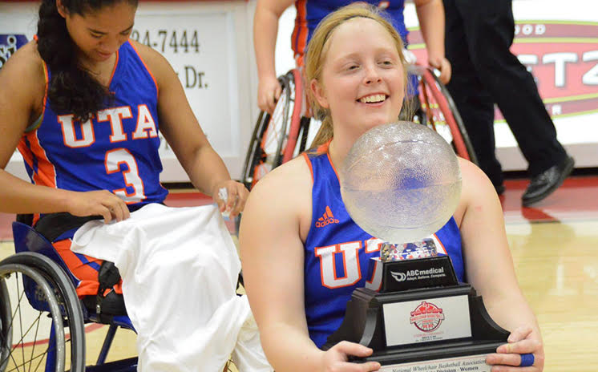
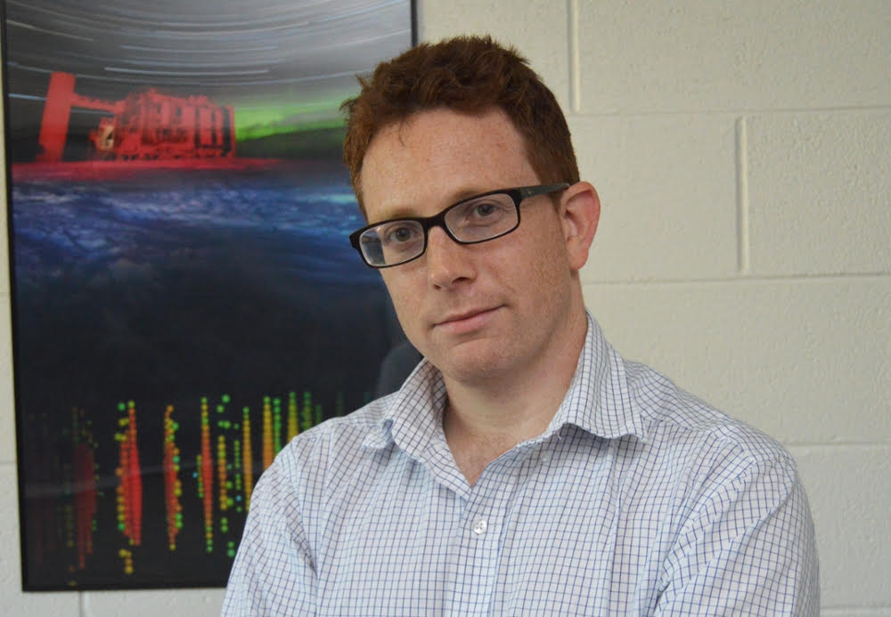

The University of Texas at Arlington’s College of Nursing and Health Innovation nursing program continued its rapid rise in the latest U.S. News & World Report 2019 graduate school rankings.UTA President Vistasp Karbhari called the rankings a testimony to the University’s increasing reputation as a Tier 1 research institution. "Last year, over 4,300 nursing graduates departed our university armed with an education from an illustrious research institute, and the skills they need to immediately enter the workforce and have an enormously positive impact on communities across Texas," Karbhari said. "These rankings cement what UTA has long been championing in our programs university-wide – acclaimed faculty, innovative programs and a dedication to providing students with tangible career competence."
The University of Texas at Arlington Lady Movin’ Mavs wheelchair basketball team defeated the University of Alabama, 65-55, claiming its second national championship title in three years at the 2018 National Intercollegiate Wheelchair Basketball Tournament March 17 in Marshall, Minn.
Lady Movin’ Mav elementary education senior Rose Hollerman led the team with 30 points and six rebounds. Hollerman was recognized as the tournament’s Most Valuable Player.Kinesiology senior Abigail Dunkin scored 14 points and grabbed six rebounds. Graduate student Morgan Wood made the last shot of the game at 39 seconds left in the final stanza.
Hollerman said the biggest struggle was sticking to their game plan despite where their emotions brought them. She was honored to be selected as the tournament MVP, which she credited to her teammates and Coach Jasom Nelms.
“It's always an honor to see that the coaches within our league recognize and respect the work I've put toward this game,” Hollerman said. “Everyone on our team plays for one another and I know this is why I received this award.
”The Lady Movin’ Mavs made history this season after compiling a 20-0 record and earning the national championship trophy.
UTA researchers are leading an international team developing a new device that could enable physicists to take the next step toward a greater understanding of the neutrino, a subatomic particle that may offer an answer to the lingering mystery of the universe's matter-antimatter imbalance.The researchers, who published their discovery Monday in Physical Review Letters, have demonstrated the effectiveness of their technique on a small scale and now plan to use the device in a large-scale detector, which they envision as a chamber containing a ton of high-pressure, purified xenon gas. David Nygren, UTA Presidential Distinguished Professor of Physics and a member of the National Academy of Sciences, had the idea to look at fluorescence when he realized how neuroscientists use the technique to look at calcium ions that jump from neuron to neuron in the brain.